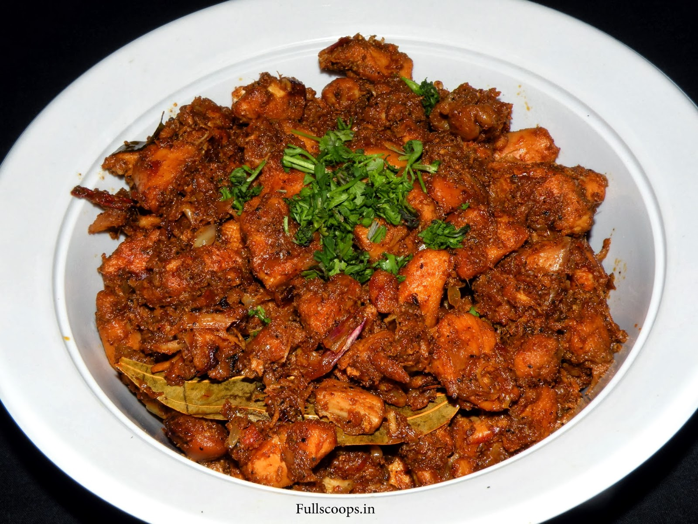

CHICKEN ROAST
Hey guys,i am happy to share the recipe of my favorite dish "chicken roast".I love this spicy and tasty chicken.Hope you too will try and enjoy this.

INGREDIENTS REQUIRED
- Chicken (1/2 kg)
- Kashmiri chillies(7)
- Red chillies(4)
- Coriander seeds(1 table spoon)
- Fennel seeds(1 table spoon)
- Jeera seeds(1 table spoon)
- Pepper(1 table spoon)
- Curd(1/2 cup)
- Lemon
- Ginger
- Garlic
- Oil
- Salt
PROCEDURE
- Place a pan on the stove
- Dry roast the kashmiri chillies and red chillies seperately
🌶
- Dry roast the coriander seeds,fennel seeds,jeera seeds,pepper for three minutes
- Grind the roasted spices,chillies,lemon juice,ginger garlic into a fine paste
- clean the chicken pieces and place it in the bowl
🍗
- Add required salt
🧂
- Mix the ground paste with the chicken and let it to marinade for an hour
🕑
- After an hour,heat the oil in a pan and add the chicken
- Cook for half an hour and give it a good mix then and there
🍲
- Roast it till the chicken is cooked and crispy
- swich off the stove and serve it
TRY AND TASTE THIS DELICIOS FOOD!!!
OTHER'S RECIPIES: